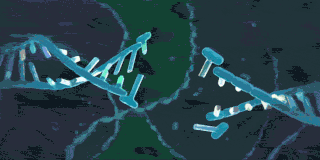
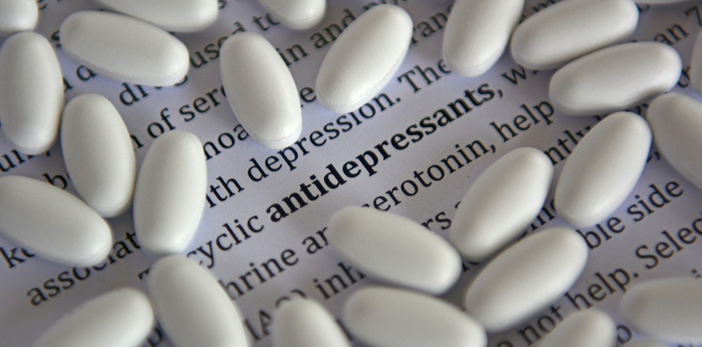
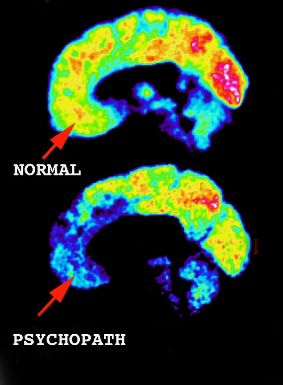
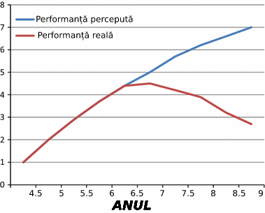
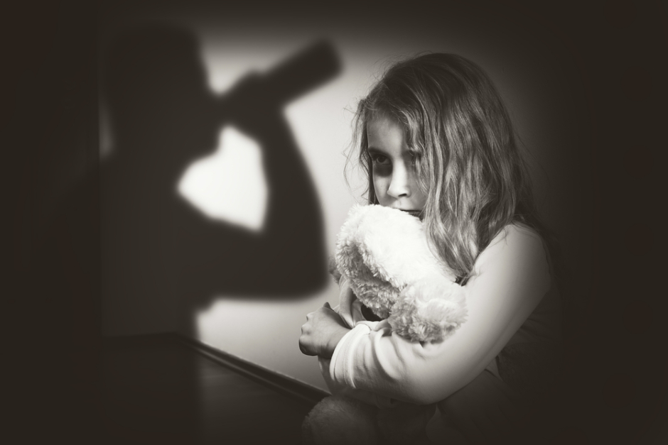

Psihopatia
-cauze și efecte-
3.Cauze si efecte
3.1.Cauze genetice
Adevăratele motive din spatele psihopatiei se rezumă de obicei la factori genetici.Un psihopat are șanse mai mari să aibă un copil cu trăsături psihopatice decât alte persoane. Studiile genetice comportamentale au identificat potențiali contribuitori genetici și non-genetici la psihopatie, inclusiv influențe asupra funcțiilor creierului. Un psihopat are șanse mai mari să aibă un copil cu trăsături psihopatice decât alte persoane, adeseori psihopatia fiind transmisă din generație în generație. Cercetarea genetică în psihopatie este încă la început, dar foarte promițătoare, mai multe grupuri de cercetare din diferite țari analizând domeniul. În general, trăsăturile psihopatice par a fi de la moderat până la puternic ereditar. Aceleași influențe genetice și de mediu par a fi importante în contabilizarea diferențelor individuale în ceea ce privește trăsăturile de personalitate psihopatică atât pentru bărbați, cât și pentru femei. Factorii genetici sunt importanți în explicarea covarianței dintre diferitele aspecte ale personalității psihopatice și stabilitatea personalității psihopate pe parcursul dezvoltării. Mai mult, genele comune contribuie la relația dintre trăsăturile psihopatice și comportamentul antisocial.
3.2.Medicamentele antidepresive
Oamenii care iau medicamente pentru depresie și anxietate au spus că au observat că personalitatea lor se schimbă. Este posibil că aceste medicamente, pentru că te fac să simți mai puține emoții, mai puțină empatie, să producă un grad sau un nivel mai ridicat al psihopatiei. Lucrul înfricoșător este că din ce in ce mai mulți oameni au început să ia astfel de medicamente datorita problemelor cu care se confruntă și a stresului.
3.3.Mediul în care a crescut
În timp ce factorii genetici pot influența, în general, dezvoltarea psihopatiei, factorii de mediu afectează expresia specifică a trăsăturilor care predomină. Psihopatia nu te face violent sau irațional, și nici nu înseamnă că ești o persoană rea. Sunt o mulțime de oameni care sunt diagnosticați cu psihopatie și totuși duc o viață complet normală. Da, gândesc diferit față de ceilalți, dar asta nu îi face criminali. Dar sunt factori care cresc șansele dezvoltării caracteristicilor violente. Deci, dacă un copil cu înclinații psihopatice trăiește într-un mediu violent sau suferă traume sunt șanse mari că acesta să fie afectat pe viitor și să își dezvolte psihopatia. Lipsa implicării părinților în viață copilului poate încuraja dezvoltarea trăsăturilor psihopatice în cazul unui copil ce prezintă astfel de caracteristici.
3.4.Leziune la creier
Cercetătorii au asociat leziunile la creier cu psihopatia și violența. Începând cu anul 1980, oamenii de știință au asociat leziunile cerebrale traumatice, cum ar fi lezarea cortexului prefrontal, inclusiv cortexul orbitofrontal, cu un comportament psihopatic și o capacitate deficitară de a lua decizii acceptabile din punct de vedere moral și social, o afecțiune care a fost denumită "sociopatie dobândită", sau „pseudopsihopatie”.Indivizii cu leziuni în zona cortexului prefrontal cunoscut sub numele de cortexul prefrontal ventromedial prezintă asemănări remarcabile cu persoanele psihopatice diagnosticate, afișând un răspuns autonom redus la stimuli emoționali, deficite de condiționare aversivă, preferințe similare în luarea deciziilor morale și economice și empatie diminuată.
3.5.Efectele psihopatiei în familie
Conviețuirea cu o persoană afectată de psihopatie ce aparține de familie adeseori poate complică lucrurile și pune anumite bariere în trăirea unei vieți normale.De exemplu, un copil cu trăsături psihopatice va fi mai greu de crescut deoarece nu va fi că ceilalți copii de vârstă lui și va avea alte pasiuni pe lângă cele obișnuite. De asemenea, dacă un părinte suferă de psihopatie nu va prezența destulă afecțiune copilului … cauzând o educație și o dezvoltare emoțională slabă.În cazuri extreme, acesta va recurge la acte precum abuzul fizic sau emoțional asupra copilului.
3.6.Efectele psihopatiei la locul de muncă
Deși psihopații reprezintă de obicei un procent relativ mic al personalului la locul de muncă, aceștia pot aduce daune enorme, în special atunci când ocupă funcții de conducere superioară. Psihopații sunt, de obicei, mai frecvenți la niveluri mai înalte ale organizațiilor corporative și acțiunile lor adesea provoacă un efect de ondulare în întreaga organizație, stabilind tonul pentru o întreagă cultură corporativă. Exemple de efecte dăunătoare sunt bullying-ul crescut, conflictul, stresul, reducerea productivității și a responsabilității sociale.Standardele etice ale unor întregi organizații pot fi afectate grav dacă un psihopat corporativ este responsabil în conducerea acestora. Un studiu britanic din 2017 a descoperit, în rândul companiilor cu lideri care prezintă „caracteristici psihopatice”, că aceștia distrug valoarea acționariatului, compania tinzând să aibă profituri slabe viitoare ale capitalurilor proprii.
3.7.Efectele psihopatiei asupra victimelor
Este bine cunoscut că psihopații prezintă o latura manipulativă și sunt în constanța căutare de noi victime de care să se folosească.Mulți oameni afectați de psihopatie ajung să fie criminali sau cel puțin să abuzeze emoțional sau fizic alte persoane din jur.Când o persoană trece printr-o astfel de trauma, această este afectată pe o perioada extinsă de timp, efectele traumei fiind in unele situații ireversibile, cauzând o viață grea pentru victimă.